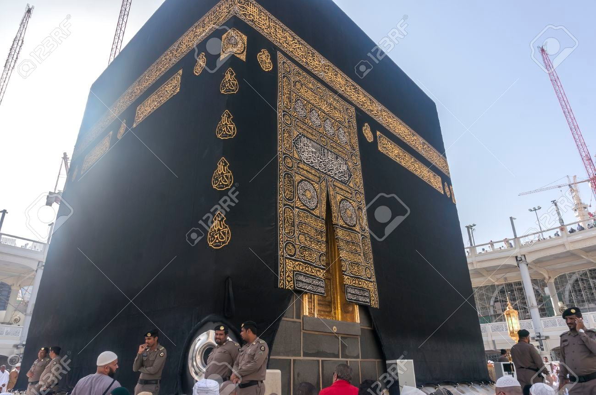
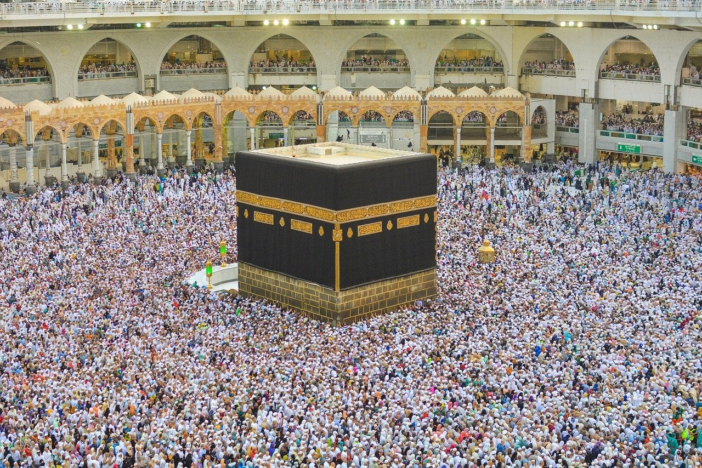
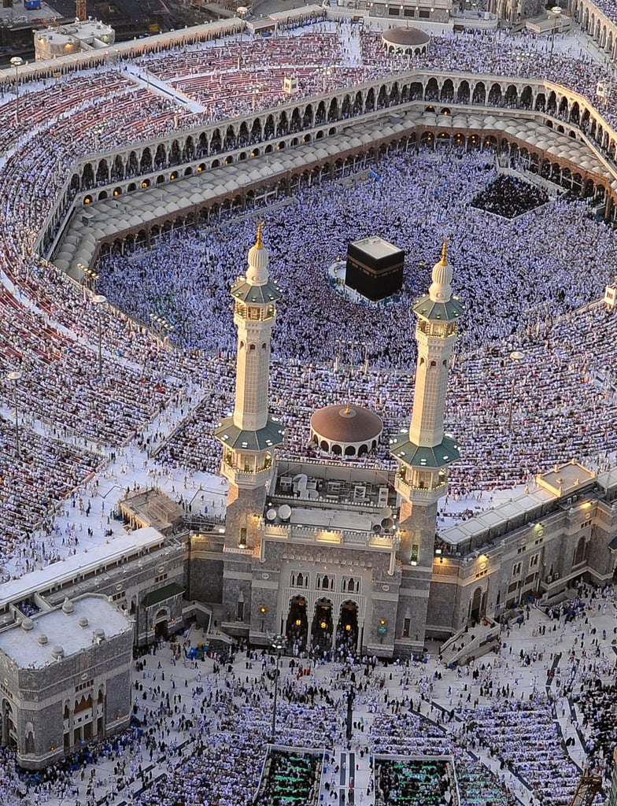

무슬림이라면 의무적으로 죽기 전에 1번이상
순례기간(12월)에
사우디 메카에 잇는 카바신전에 가서
의식을 치러야함 ㅋㅋ
근데 무슬림이 전세계에
대략 20억명 가까이 돼서
매년 수백만명이 저 카바신전
한곳에 모이는데
매년 압사당하거나 사고나서
사망자 나오고
10년전처럼 재수없으면
2000명 넘게 한방에 죽어버림
매년 수십 수백명씩 압사당하거나 사고나서 죽어도
매년 수백만명씩 무슬림들 저기에 가서
의식치름 ㅋㅋ
근데 저건 우상이 아닌 거냐? 전세계에서 찾아와서 절하는데?